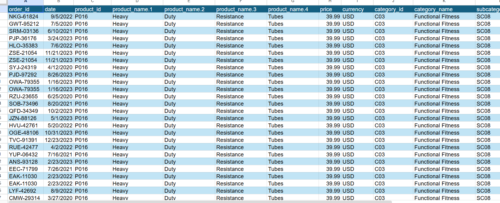

In this task, I used Power Query in Excel to normalize data, organizing it into a structured format that reduces redundancy and makes analysis more efficient.
Through this activity, I learned how Power Query can streamline data normalization and improve overall data quality for analysis.
Back to Projects Show Project